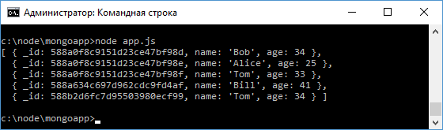
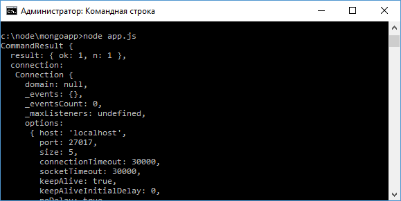
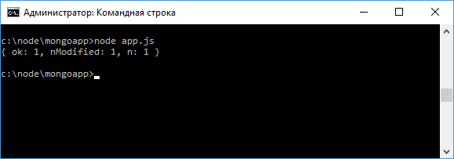
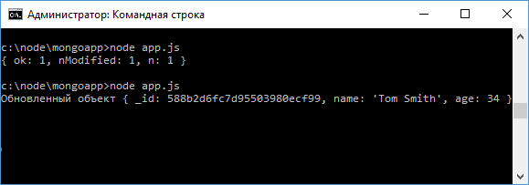

CRUD в Mongoose
Рассмотрим, как выполнять основные операции с данными в Mongoose.
Создание документов
В прошлых темах было в общих чертах описано создание и добавление объектов в Mongoose.
В частности, у объекта модели мы можем вызвать метод save():
var user = new User({name: "Tom", age: 34});
user.save(function(err){
mongoose.disconnect();
if(err) return console.log(err);
console.log("Сохранен объект user", user);
});
Но кроме этого метода также можно использовать метод User.create():
User.create({name: "Tom", age: 34}, function(err, doc){
mongoose.disconnect();
if(err) return console.log(err);
console.log("Сохранен объект user", doc);
});
Первый параметр метода - сохраняемый объект.
Получение данных
Для получения данных можно использовать целый набор методов:
- find: возвращает все объекты, которые соответствуют критерию фильтрации
- findById: возвращает один объект по значению поля _id
- findOne: возвращает один объект, который соответствует критерию фильтрации
Метод find() в качестве первого параметра принимает критерий фильтрации, а второй параметр - функция обратного вызова, в которую передаются полученные из бд документы:
var mongoose = require("mongoose");
var Schema = mongoose.Schema;
mongoose.Promise = global.Promise;
mongoose.connect("mongodb://localhost:27017/usersdb");
var userScheme = new Schema({name: String, age: Number}, {versionKey: false});
var User = mongoose.model("User", userScheme);
User.find({}, function(err, docs){
mongoose.disconnect();
if(err) return console.log(err);
console.log(docs);
});
Если в качестве критерия фильтрации передаются пустые фигурные скобки ({}), то возвращаются все объекты:
Изменим код для получения только тех пользователей, у которых имя - Tom:
User.find({name: "Tom"}, function(err, docs){
mongoose.disconnect();
if(err) return console.log(err);
console.log(docs);
});
Метод findOne() работает аналогично методу find, только возвращает один объект:
User.findOne({name: "Tom"}, function(err, doc){
mongoose.disconnect();
if(err) return console.log(err);
console.log(doc);
});
И метод findById() возвращает документ с определенным идентификатором:
var id = "588a0f8c9151d23ce47bf98d";
User.findById(id, function(err, doc){
mongoose.disconnect();
if(err) return console.log(err);
console.log(doc);
});
Удаление данных
Для удаления применяется метод remove().
В этот метод передается критерий фильтрации документов на удаление.
Например, удалим всех пользователей, у которых возраст равен 33:
var mongoose = require("mongoose");
var Schema = mongoose.Schema;
mongoose.Promise = global.Promise;
mongoose.connect("mongodb://localhost:27017/usersdb");
var userScheme = new Schema({name: String, age: Number}, {versionKey: false});
var User = mongoose.model("User", userScheme);
var id = "588a0f8c9151d23ce47bf98d";
User.remove({age:33}, function(err, result){
mongoose.disconnect();
if(err) return console.log(err);
console.log(result);
});
Объект result, который передается в функцию обратного вызова, содержит информацию об операции удаления:

Если же нам надо удалить один документ, то мы можем использовать метод findOneAndRemove():
User.findOneAndRemove({name:"Bill"}, function(err, doc){
mongoose.disconnect();
if(err) return console.log(err);
console.log("Удален пользователь ", doc);
});
В отличие от метода remove здесь в функцию обратного вызова передается удаленный документ:
И частная разновидность этого метода - удаление по полю _id в виде метода findByIdAndRemove():
var id = "588a0f8c9151d23ce47bf98d";
User.findByIdAndRemove(id, function(err, doc){
mongoose.disconnect();
if(err) return console.log(err);
console.log("Удален пользователь ", doc);
});
Изменение данных
Каждая модель имеет собственный метод update(), который позволяет обновить документы в бд:
var mongoose = require("mongoose");
var Schema = mongoose.Schema;
mongoose.Promise = global.Promise;
mongoose.connect("mongodb://localhost:27017/usersdb");
var userScheme = new Schema({name: String, age: Number}, {versionKey: false});
var User = mongoose.model("User", userScheme);
User.update({name: "Tom"}, {name: "Tom Smith"}, function(err, result){
mongoose.disconnect();
if(err) return console.log(err);
console.log(result);
});
Первый параметр метода - критерий фильтрации.
В данном случае мы находим всех пользователей, у которых имя "Tom".
А второй параметр описывает, что и как надо изменить.
То есть здесь мы меняем имя на "Tom Smith".
В функцию обратного вызова передается результат операции:
Нередко для обновления используется фильтрация по _id.
И на этот случай мы можем использовать метод findByIdAndUpdate():
var id = "588b2d6fc7d95503980ecf99";
User.findByIdAndUpdate(id, {name: "Sam", age: 25}, function(err, user){
mongoose.disconnect();
if(err) return console.log(err);
console.log("Обновленный объект", user);
});
Первый параметр метода - значения для поля _id у обновляемого документа, а второй - набор новых значений для полей объекта.
В функцию обратного вызова передается обновленный документ:
Но по умолчанию передается старое состояние документа.
Если же нам надо получить документ уже в измененном состоянии, то в метод findByIdAndUpdate необходимо передать еще один параметр:
User.findByIdAndUpdate(id, {name: "Bilbo Baggins", age: 111}, {new: true}, function(err, user){
mongoose.disconnect();
if(err) return console.log(err);
console.log("Обновленный объект", user);
});